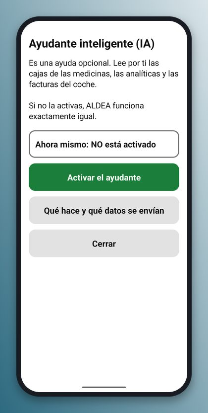
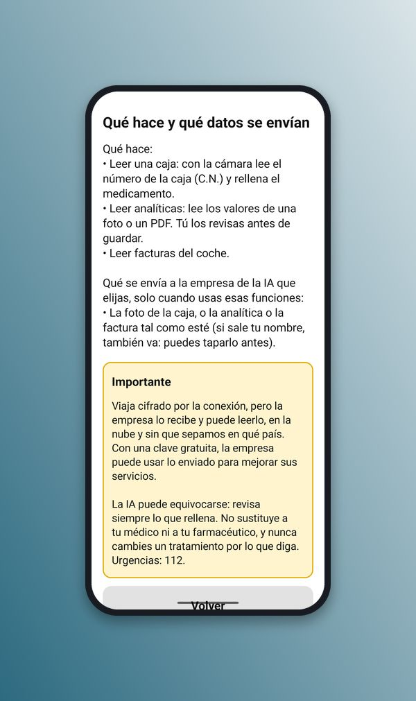
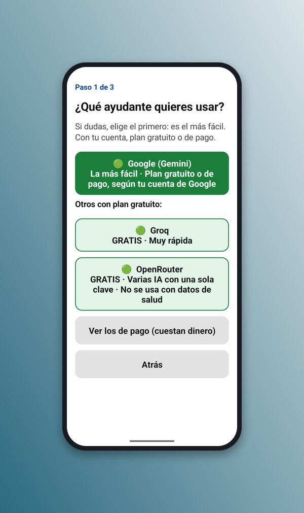
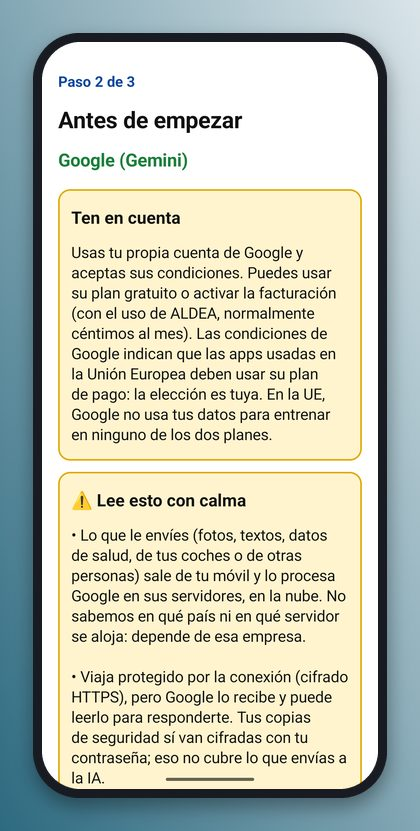
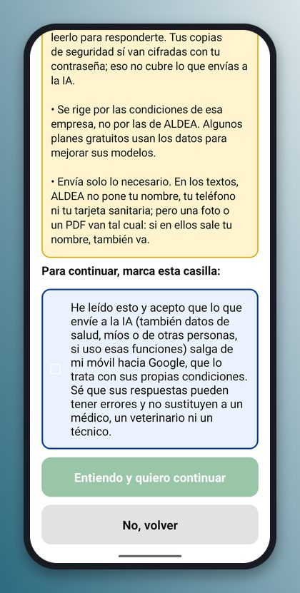
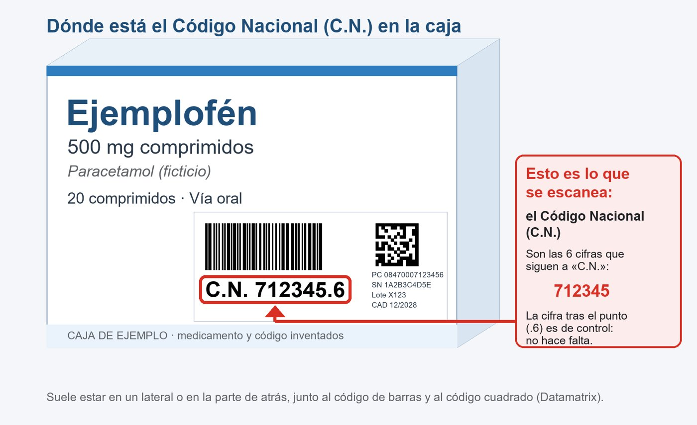

🎬 Míralo en vídeo
Menos de un minuto, con voz. Los datos que salen son de ejemplo.
📱 Así se ve





Capturas con datos de ejemplo. Toca una para verla en grande; pasan solas (se paran mientras la miras).
ALDEA puede usar una inteligencia artificial (IA) para ahorrarte trabajo en Salud, con los coches y para revisar tus datos. La eliges tú: Google (Gemini), la más fácil y gratuita, u otras. Es opcional: sin ella todo funciona igual, salvo estas funciones.
| Función | Dónde está | Qué hace |
|---|---|---|
| Escanear la caja | Salud › Medicamentos › Cámara | Lee el Código Nacional de la caja y la aplicación trae del registro oficial (CIMA) el nombre, el principio activo, la dosis y el prospecto. |
| Escanear analíticas | Salud › Pruebas y analíticas | Lee los valores de una foto o un PDF, cada uno con la fecha de su analítica (capítulo 5.4). |
| Leer la etiqueta del vino | Vinoteca › Añadir vino › 📷 Leer la etiqueta | Lee nombre, bodega, denominación, tipo, crianza, añada, uvas, grado y formato de la foto de la etiqueta. Lo que no se ve, lo deja en blanco (capítulo 5.9). |
| Buscar el precio del vino | Vinoteca › ficha › 🔎 Precio › Buscar con la IA | Solo con Google (Gemini): busca en internet el precio habitual, las puntuaciones y la gama del vino, y te da las fuentes. No inventa precios: si no los encuentra, lo dice. |
| Revisar con IA | Botón 🤖 Revisar en Casa, Inventario, Flota, Libros, Mascotas, Cuidado y Vinoteca | Repasa un apartado entero y te dice qué puede estar mal apuntado (repetidos, importes o fechas raros), qué conviene hacer pronto (garantías, revisiones, seguros) e ideas generales de ahorro. Cada observación dice de qué dato sale. No recomienda marcas ni compañías ni da precios. Antes de enviar, te enseña el texto exacto. |
La IA puede equivocarse. Comprueba que el medicamento escaneado es el correcto y revisa los valores de una analítica antes de guardarlos.
7.1 Activar la inteligencia artificial
En el portal toca Inteligencia artificial. Se abre una pantalla con letra grande y botones grandes que te guía en tres pasos. ALDEA no incluye ninguna clave: cada persona usa la suya, que se guarda solo en su móvil.
- Paso 1 — Elige tu ayudante. Google (Gemini) es el más fácil: con tu cuenta de Google puedes usar su plan gratuito o activar la facturación (normalmente céntimos al mes). Sus condiciones indican que las apps usadas en la Unión Europea deben usar el plan de pago: la elección es tuya. Groq y OpenRouter tienen planes gratuitos. Los que cuestan dinero (OpenAI, Anthropic y DeepSeek) están en una lista aparte («Ver los de pago») y salen con fondo rojo y la etiqueta «DE PAGO».
- Paso 2 — Antes de empezar. Lee el aviso: lo que envías sale de tu móvil y lo procesa la empresa elegida en la nube, sin que sepamos en qué país; viaja cifrado por la conexión, pero la empresa puede leerlo; rigen las condiciones de esa empresa. Si es de pago, un recuadro rojo te recuerda que el coste va a tu cuenta con esa empresa: pon un límite de gasto en su web antes de seguir.
- Paso 3 — Tu clave. La clave es como una contraseña que te da la empresa. Toca ① Abrir la página, sigue los pasos que te explica la pantalla y copia la clave. Vuelve a ALDEA y toca ② Pegar mi clave y activar. ALDEA la comprueba y verás «¡Listo! Ya está activado». Si prefieres, escribe la clave en el cuadro y toca «Activar con lo escrito».
Si la clave que pegas es de otra empresa, ALDEA te lo dice y te ofrece usar la correcta. Desde esa misma pantalla puedes probar si funciona, cambiar de ayudante, ver qué datos se envían o desactivar la IA (se borra la clave del móvil; tus datos no cambian). Ten en cuenta: DeepSeek no se usa con datos de Salud, y DeepSeek no lee fotos (no sirve para escanear cajas, analíticas ni facturas).
Activar cada función (bajo tu responsabilidad). Además de la clave, cada función se activa por separado. La primera vez que vayas a usar una, ALDEA te explica qué hace, qué datos se envían a la empresa de IA y sus riesgos, y tú decides: «Entiendo los riesgos y la activo» o «No, gracias». No se envía nada hasta que la actives. La activación dura 3 meses: después se te vuelve a preguntar, y también si cambia lo que hace esa función. Puedes ver y retirar cada una en Salud › 🤖 Inteligencia artificial: tus funciones (al final del menú de la persona).
7.2 Escanear la caja de un medicamento

- Salud › elige la persona › Medicamentos › Cámara. Si ya tienes una foto de la caja, toca «Leer el código de una foto que ya tengo».
- Enfoca el texto «C.N.» y sus 6 cifras, grandes y dentro del recuadro.
- Comprueba que el medicamento encontrado es el correcto. Si no lo lee: más luz, sin reflejos, o escribe las cifras a mano.
- Se abre la cámara para la fecha de caducidad: enfoca la fecha (CAD o EXP) dentro del recuadro y toca la imagen, escríbela, o pulsa «Sin fecha, seguir». Con fecha, ALDEA te avisará antes de que caduque.
- Después, un apartado cada vez: los datos (para qué es y desde cuándo), cuánto se toma y el aviso de la caja. Rellena o pulsa «Saltar».
- Por último, «¿Dar de alta?» con el resumen: «Sí, dar de alta» lo guarda (lo que falte lo puedes poner después con Editar) o «Revisar todo» para ver el formulario completo.
- Medicamentos europeos sin C.N.: escanea o escribe el número del tipo EU/1/09/608/011.
7.3 Qué datos se envían a la empresa de IA
| Cuándo | Qué se envía | Qué NO se envía |
|---|---|---|
| Escanear una caja | La imagen del recuadro de la cámara. | Nombres, fichas ni otros datos. |
| Escanear una analítica | La foto o el PDF de la analítica (con lo que figure en el informe). | Nada más. Puedes tapar tus datos personales antes. |
| Leer la etiqueta del vino | La foto de la etiqueta (reducida). | Nada más. |
| Buscar el precio del vino | Nombre, bodega, denominación, tipo, crianza, añada y formato del vino. | Nada tuyo. |
| Revisar con IA | Conceptos, categorías, marcas y modelos, importes y fechas del apartado. Lo ves antes de enviarlo. | Nombres de personas, direcciones, matrículas, nº de póliza, CUPS, teléfonos ni notas. |
| En cualquier otro momento | Nada. | — |
- Lo que se envía viaja cifrado por la conexión, pero la empresa lo recibe y puede leerlo, en la nube y sin que sepamos en qué país. Con una clave gratuita, la empresa puede usar lo enviado para mejorar sus servicios: por eso ALDEA envía lo mínimo.
- La clave se guarda solo en tu dispositivo y va cifrada en tus copias de seguridad. No la compartas.
- Las gratuitas tienen límites de uso diarios, de sobra para una familia; si se superan, espera un rato. Las de pago cobran según el uso, en tu cuenta con esa empresa.